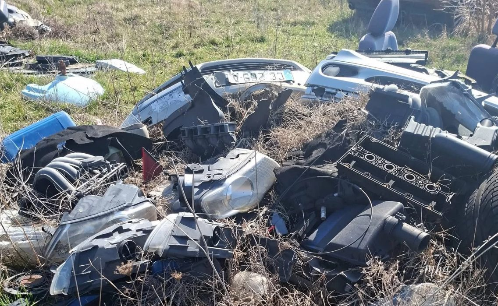
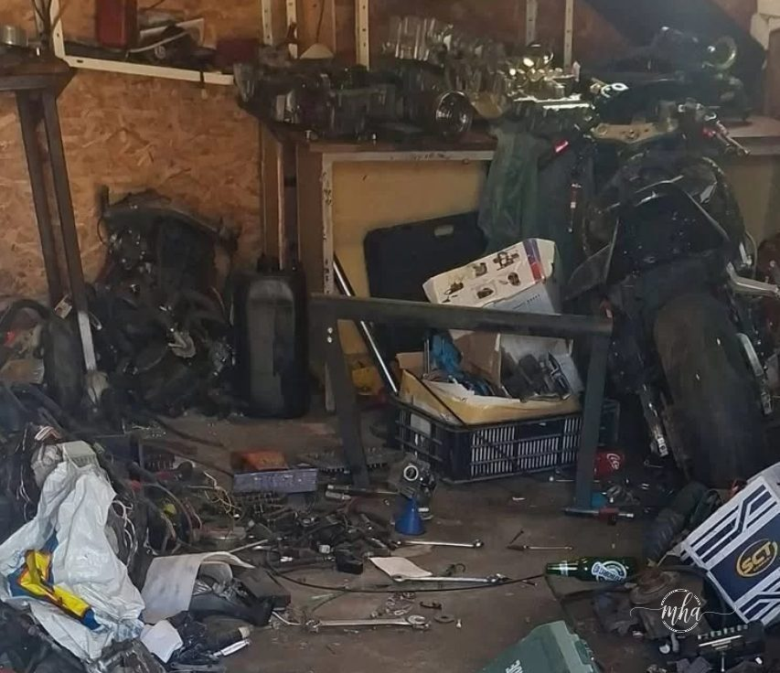

Mai multe activități ilegale de dezmembrare auto au fost descoperite de comisarii Gărzii Naționale de Mediu în județul Mehedinți, în urma unui control desfășurat împreună cu polițiștii.
Verificările au avut loc pe raza comunei Șimian, unde inspectorii au identificat patru persoane fizice care dezmembrau autoturisme fără a avea autorizații de mediu și fără a respecta regulile privind gestionarea deșeurilor.
Autovehicule întregi și piese aruncate pe sol
În timpul controalelor, comisarii au găsit autovehicule întregi sau deja dezmembrate, piese auto depozitate la întâmplare și cantități mari de deșeuri rezultate în urma dezmembrărilor, toate aruncate direct pe sol, fără nicio măsură de protecție a mediului.
Situația descoperită ridică probleme serioase de poluare, deoarece astfel de activități pot contamina solul și pot afecta mediul înconjurător.
Amenzi de 60.000 de lei
Pentru neregulile constatate, inspectorii au aplicat sancțiuni contravenționale în valoare totală de 60.000 de lei și au dispus măsuri pentru ca persoanele depistate să intre în legalitate.
📋 Rezultatele controlului
- Locație: comuna Șimian, județul Mehedinți
- Persoane sancționate: 4 persoane fizice
- Nereguli: dezmembrări auto fără autorizații, deșeuri pe sol
- Amenzi aplicate: 60.000 de lei total
- Control organizat de: Garda Națională de Mediu + Poliție
Acțiunea a avut loc chiar în contextul în care Garda Națională de Mediu a marcat 23 de ani de la înființare, comisarii din Mehedinți alegând să marcheze momentul printr-un control în teren.
Reprezentanții instituției anunță că astfel de verificări vor continua și în perioada următoare, pentru a descuraja activitățile ilegale și pentru a proteja mediul.
Imagini de la fața locului

